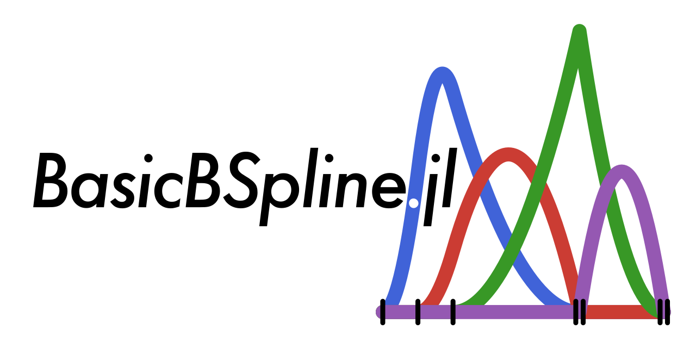
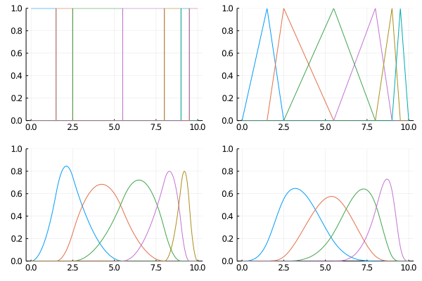
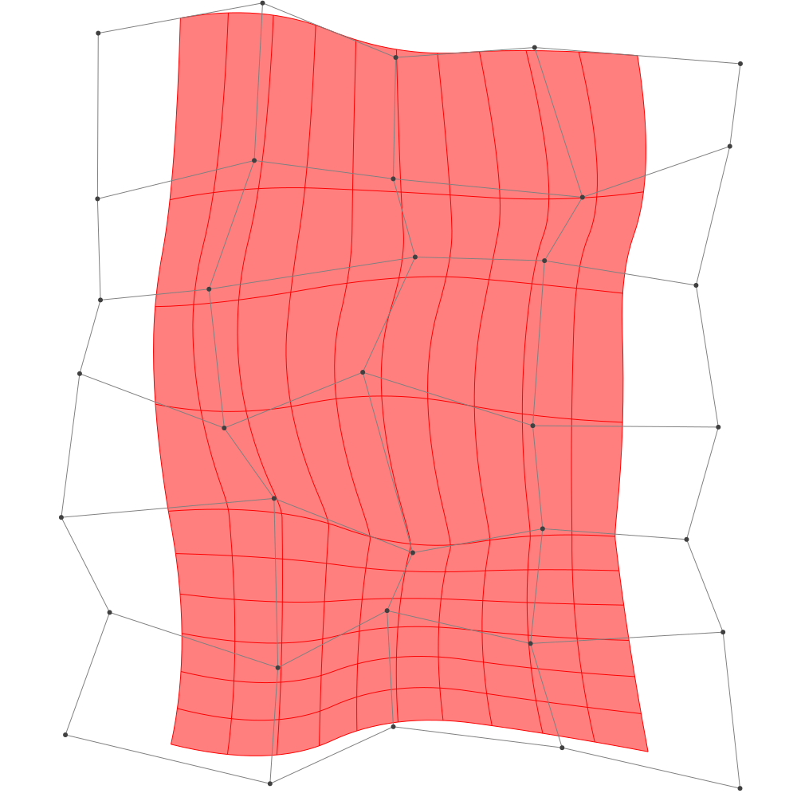
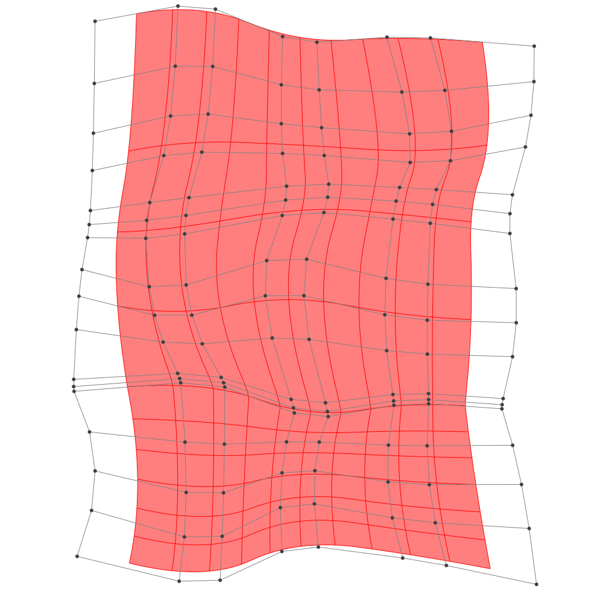

BasicBSpline.jl
Basic (mathematical) operations for B-spline functions and related things with julia



Summary
This package provides basic mathematical operations for B-spline.
- B-spline basis function
- Some operations for knot vector
- Some operations for B-spline space (piecewise polynomial space)
- B-spline manifold (includes curve, surface and solid)
- Refinement algorithm for B-spline manifold
- Fitting control points for given function
Comparison to other julia packages for B-spline
Note that the following comparison might not correct. If you have any thoughts, please help in issue#161.
- Interpolations.jl
Currently this package's support is best for B-splines and also supports irregular grids.
- But seems like no method for B-spline manifold.
- ApproXD.jl
- Its functions are similar to Interpolations.jl.
- Dierckx.jl
- Wrapper for the dierckx Fortran library.
- Only 1-d or 2-d B-spline manifold are supported.
- 5 or less degree of polynomial are supported.
- BasicBSpline.jl (this package)
- Any degree of polynomial are supported.
- Refinement algorithm for B-spline manifold.
- Fitting algorithm by least squares.
- High performance on speed.
- Mathematically oriented.
Installation
Install this package
] add BasicBSplineTo export graphics, use BasicBSplineExporter.jl.
] add https://github.com/hyrodium/BasicBSplineExporter.jlExample
B-spline function
using BasicBSpline
using Plots
k = KnotVector([0.0, 1.5, 2.5, 5.5, 8.0, 9.0, 9.5, 10.0])
P0 = BSplineSpace{0}(k) # 0th degree piecewise polynomial space
P1 = BSplineSpace{1}(k) # 1st degree piecewise polynomial space
P2 = BSplineSpace{2}(k) # 2nd degree piecewise polynomial space
P3 = BSplineSpace{3}(k) # 3rd degree piecewise polynomial space
plot(
plot([t->bsplinebasis(P0,i,t) for i in 1:dim(P0)], 0, 10, ylims=(0,1), legend=false),
plot([t->bsplinebasis(P1,i,t) for i in 1:dim(P1)], 0, 10, ylims=(0,1), legend=false),
plot([t->bsplinebasis(P2,i,t) for i in 1:dim(P2)], 0, 10, ylims=(0,1), legend=false),
plot([t->bsplinebasis(P3,i,t) for i in 1:dim(P3)], 0, 10, ylims=(0,1), legend=false),
layout=(2,2),
)
Try interactive graph with Desmos graphing calculator!
B-spline manifold
using BasicBSpline
using BasicBSplineExporter
using StaticArrays
p = 2 # degree of polynomial
k1 = KnotVector(1:8) # knot vector
k2 = KnotVector(rand(7))+(p+1)*KnotVector(1)
P1 = BSplineSpace{p}(k1) # B-spline space
P2 = BSplineSpace{p}(k2)
n1 = dim(P1) # dimension of B-spline space
n2 = dim(P2)
a = [SVector(2i-6.5+rand(),1.5j-6.5+rand()) for i in 1:dim(P1), j in 1:dim(P2)] # random generated control points
M = BSplineManifold(a,(P1,P2)) # Define B-spline manifold
save_png("2dim.png", M) # save image
Refinement
h-refinemnet
k₊=(KnotVector(3.3,4.2),KnotVector(0.3,0.5)) # additional knotvectors
M_h = refinement(M,k₊=k₊) # refinement of B-spline manifold
save_png("2dim_h-refinement.png", M_h) # save imageNote that this shape and the last shape are identical.
p-refinemnet
p₊=(1,2) # additional degrees
M_p = refinement(M,p₊=p₊) # refinement of B-spline manifold
save_png("2dim_p-refinement.png", M_p) # save image
Note that this shape and the last shape are identical.
Fitting B-spline manifold
Try on Desmos graphing graphing calculator!
p1 = 2
p2 = 2
k1 = KnotVector(-10:10)+p1*KnotVector(-10,10)
k2 = KnotVector(-10:10)+p2*KnotVector(-10,10)
P1 = BSplineSpace{p1}(k1)
P2 = BSplineSpace{p2}(k2)
f(u1, u2) = SVector(2u1 + sin(u1) + cos(u2) + u2 / 2, 3u2 + sin(u2) + sin(u1) / 2 + u1^2 / 6) / 5
a = fittingcontrolpoints(f, (P1, P2))
M = BSplineManifold(a, (P1, P2))
save_png("fitting.png", M, unitlength=50, xlims=(-10,10), ylims=(-10,10))

If the knotvector span is too coarse, the approximation will be coarse.
p1 = 2
p2 = 2
k1 = KnotVector(-10:5:10)+p1*KnotVector(-10,10)
k2 = KnotVector(-10:5:10)+p2*KnotVector(-10,10)
P1 = BSplineSpace{p1}(k1)
P2 = BSplineSpace{p2}(k2)
f(u1, u2) = SVector(2u1 + sin(u1) + cos(u2) + u2 / 2, 3u2 + sin(u2) + sin(u1) / 2 + u1^2 / 6) / 5
a = fittingcontrolpoints(f, (P1, P2))
M = BSplineManifold(a, (P1, P2))
save_png("fitting_coarse.png", M, unitlength=50, xlims=(-10,10), ylims=(-10,10))
Draw smooth vector graphics
p = 3
k = KnotVector(range(-2π,2π,length=8))+p*KnotVector(-2π,2π)
P = BSplineSpace{p}(k)
f(u) = SVector(u,sin(u))
a = fittingcontrolpoints(f, (P,))
M = BSplineManifold(a, (P,))
save_svg("sine-curve.svg", M, unitlength=50, xlims=(-2,2), ylims=(-8,8))
save_svg("sine-curve_no-points.svg", M, unitlength=50, xlims=(-2,2), ylims=(-8,8), points=false)

This is useful when you edit graphs (or curves) with your favorite vector graphics editor.

Citation
If you use BasicBSpline.jl in your work, please consider citing it by
@software{yuto_horikawa_2022_6465801,
author = {Yuto Horikawa},
title = {hyrodium/BasicBSpline.jl: v0.5.6},
month = apr,
year = 2022,
publisher = {Zenodo},
version = {v0.5.6},
doi = {10.5281/zenodo.6465801},
url = {https://doi.org/10.5281/zenodo.6465801}
}